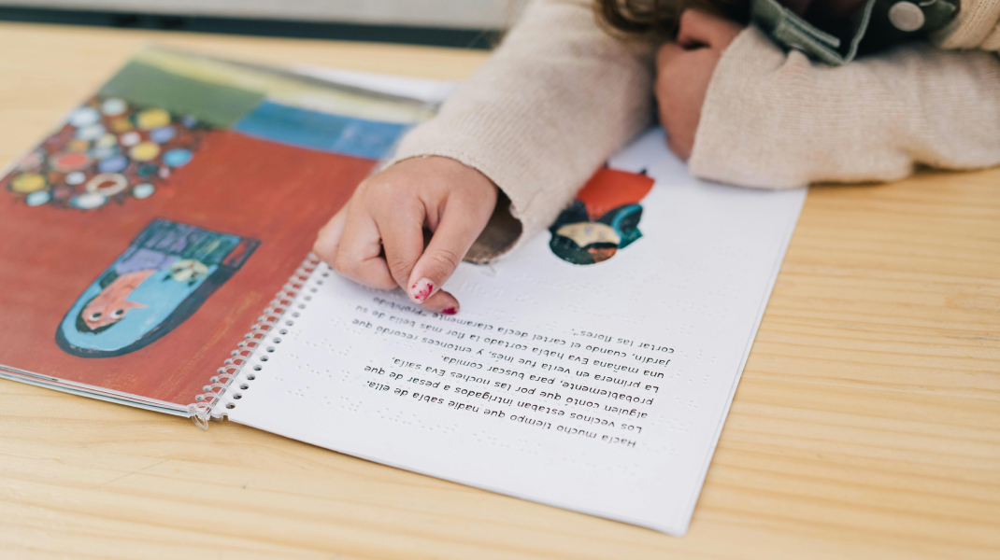
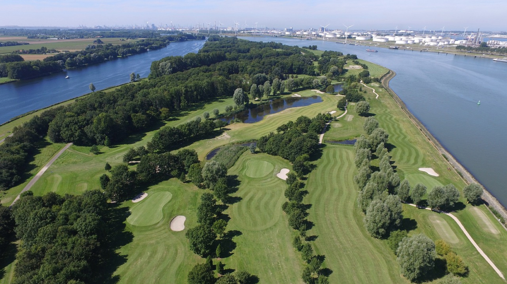
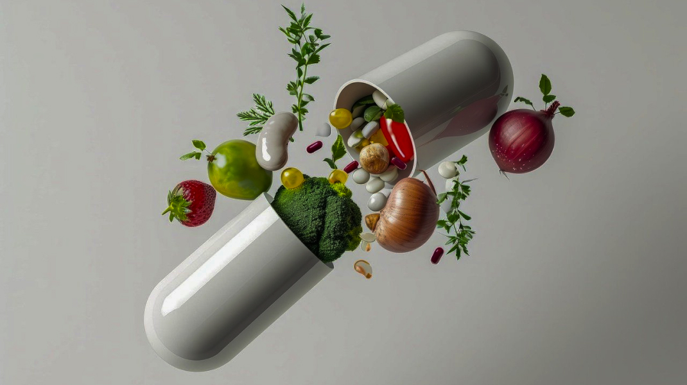
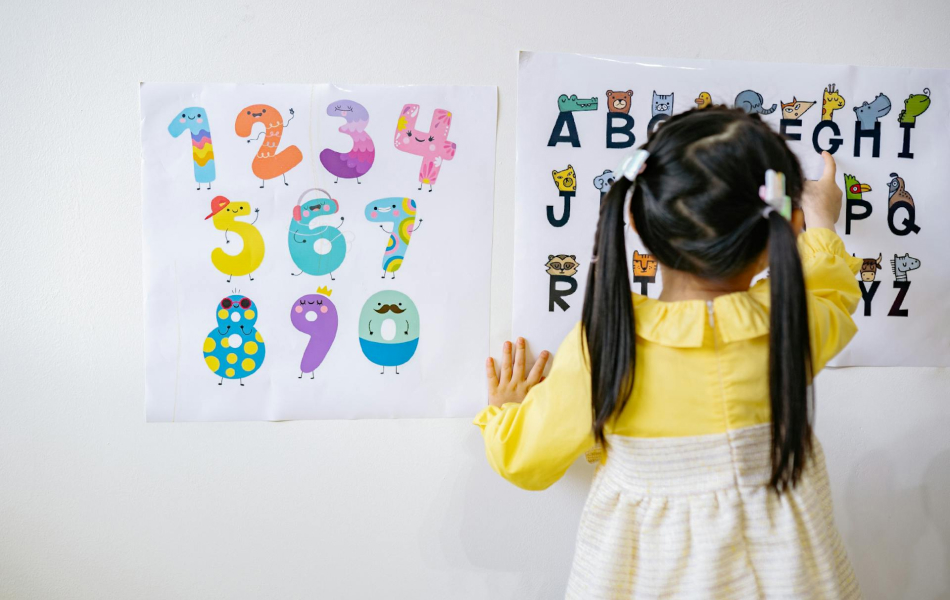
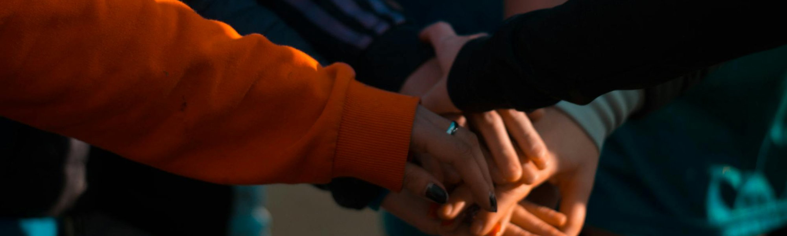

본문컨텐츠영역
사업영역
어제보다 더 나은 오늘, 오늘보다 더 큰 내일 웅진이 만들어갑니다.
-
IT
디지털 혁신의 중심에 웅진이 있습니다.
IT서비스로 디지털 혁신을 이루고,
기업 고객의 성공적인 미래가치창출을 이루기 위해 함께하겠습니다.
-

교육출판
아이들을 위해 10년 앞을 생각합니다.
웅진은 어린이부터 성인까지 모든 연령대를 대상으로
다양한 장르의 콘텐츠를 개발하여 한국의 출판 시장을 선도하고 있습니다.
-

레저
뛰어난 자연비경을 즐길 수 있는 5대 명문 컨트리클럽과
국내 최고 가족형 복합레저 테마파크까지,
웅진의 레저산업을 소개합니다.
-

화장품 건강식품
웅진은 건강하고 아름다운 삶의 패러다임을 제시합니다.
바이럴 마케팅, 네트워크 보상플랜, 온라인 쇼핑몰을 결합한 새로운 모델을 통해
소비자와 사업자를 만족시키고 새로운 가치를 만들겠습니다.
사회공헌
- 학습결손지원
- 웅진은 어린이를 대상으로 한 교육문화 부분에 대해
사회공헌활동을 진행하고 있습니다. 교육으로 키우는 새로운 희망,
웅진이 앞장서겠습니다.
-
더보기

공지사항
웅진의 다양한 소식을 전해드립니다.
더보기
인재채용

Think Together, Thinkbig
사람 또 사람, 그리고 사랑 그 놀라운 힘을 믿습니다.